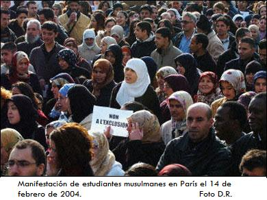

Por laicismo se entiende la acción reguladora del Estado a través de sus órganos de gobierno para alcanzar la convivencia social ordenando la actividad de las instituciones denominadas iglesias. El laicismo es, así, un instrumento que somete la aspiración hegemónica de cada credo a ser asumido como el verdadero y único, y para hacer valer los intereses de la nación en conjunto sobre intereses particulares incluyendo a los religiosos.
…el credo mayoritario, el católico, los protestantismos, las religiones paracristianas como los Testigos de Jehová e incluso los musulmanes, se esfuerzan por lograr la imposición de sus creencias y en contrapartida la extinción de las ajenas porque su victoria tendría que ser entendida como la demostración de la magnificencia de su propio dios. Todas las manifestaciones religiosas son, pues, excluyentes y sólo el estado puede garantizar que todas sin excepción se beneficien del respeto mutuo mediante una estrategia laicista emprendida sin cortapisas y sin excepciones por los órganos gubernamentales.
—Gastón Pardo, Columnista mexicano.
Durante el 2004 Francia fue foco de acolaradas discusiones sobre la laicicidad y la libertad religiosa. El estado francés, laico por naturaleza, se ha propuesto prohibir el uso de vestimentas religiosas y la ostentación de símbolos religiosos judíos, cristianos, sijs, o musulmanes en el espacio más público del estado francés: La escuela pública. La controversia no se ha hecho esperar, los musulmanes argumentan estar siendo discriminados, mientras que los secularistas recuerdan a la ciudadanía que una de las bases de la sociedad democrática es la separación de la Iglesia y el Estado como requisito en la garantía de las libertades de todas las personas sin importar su credo.

Francia: Ni pañoletas, ni cruces, ni pastel
Por: Rationalist International (vea también el artículo original)
Un viento fresco está surgiendo en Francia. Soplando a través de las escuelas y llevándose los fantasmas del irracionalismo, la intolerancia y la opresión, quita una carga oscura y pesada de muchos hombros pequeñitos. La prohibición de las pañoletas musulmanas, las cruces cristianas y otros símbolos de sumisión religiosa, garantiza de nuevo a los niños su derecho básico de crecer como ciudadanos iguales y libres. Nadie nace cristiano, musulmán, judío, o sikh.
Defendiendo su identidad secular y reafirmando su compromiso con la libertad individual, Francia ha invertido la tendencia y ha dado un paso significativo para hacer retroceder la sucia onda de fundamentalismo que está arrollando al mundo desde que el Islam militante levantó su cabeza con la Revolución Iraní. Esta es una gran motivación para el lado de la libertad y el progreso. El secularismo no sólo es un pilar de la Constitución Francesa: es la esencia de la civilización moderna y tiene que ser defendida contra todos los intentos religiosos de deshacer los logros históricos.
La prohibición de los símbolos religiosos en las escuelas estatales y en los servicios de la administración pública que representan la República Francesa secular, no es tan nueva como los lamentos de los fundamentalistas islámicos y las condencaciones de las iglesias cristianas lo sugieren. El principio de la sociedad “laica” está consagrado en la Constitución Francesa y se refleja en sus leyes desde 1905. No ha habido cruces ni pañoletas en las escuelas francesas por muchas décadas. La influencia dominante de la Iglesia Católicas, contra la cual la sociedad laica tuvo que protegerse a sí misma, había estado restringida, y el número creciente de inmigrantes musulmanes desde África del Norte trató de integrarse en una sociedad en la cual la religión era de forma exclusiva, una cuestión privada.
El conflicto nació cuando en Irán, en 1979, un gobierno fundamentalista llegó al poder y propagó de forma agresiva un código de vestuario islámico para la mujer. Las confrontaciones acerga de las pañoletas crecieron en intensidad durante los años recientes. Las iglesias cristianas trataron de usar la oportunidad para reversar la rueda de la historia. Ellas derramaron lágrimas de cocodrilo por los musulmanes “perseguidos”, con la esperanza de que, bajo la cubierta de las pañoletas, la cruz pudiera ser introducida de vuelta a las aulas de clase. Pero el secularismo francés prevaleció y continua siendo un modelo.
El principio francés de la sociedad laica permite la libertad de culto, pero ni valida ni respalda ninguna religión. El Estado y la Iglesia están perfectamente separados. Este concepto es fundamentalmente diferente de otra “interpretación” del secularismo, que prevalece en muchos países hoy día. No excluye la religión de las cuestiones de la sociedad civil, sino que “corrige” la injusticia de privilegiar una, invitándolas a todas a la mesa. Cada comunidad tiene su voz, y obtiene su tajada del pastel. Algunos gobiernos incluso invitan a los “secularistas” para que se unan a la fiesta como si fueran otra religión, pervirtiendo la idea de una sociedad laica hasta llevarla a un absurdo.
En Francia no hay pastel. Pero hay escuelas defendiendo la libertad individual de los niños. Protectorados seculares, donde las garras de la religión no pueden tocarte y las mentes jóvenes pueden aprender a formarse sus propias convicciones y hacer sus propias elecciones.

La Corte Europea defiende la prohibición de los velos islámicos
Por: Rationalist International (vea también el artículo original)
La Corte Europea de Derechos Humanos reglamentó el 29 de junio que la prohibición de velos islámicos en escuelas públicas no viola la libertad religiosa. En un juicio unánime, los siete jueces declararon que las prohibiciones del uso de velos eran apropiadas para proteger la naturaleza secular del Estado, especialmente contra demandas extremistas. Enunciadas en nombre de la separación de la iglesia y el estado, tales prohibiciones se podían considerar “necesarias en una sociedad democrática”.
La decisión fue tomada en el caso Leyla Sahin contra La República de Turquía. Sahin, ex-estudiante de la facultad de medicina de la Universidad de Estambul, había sido impedida de rendir un examen cuando ella insistió en usar un velo, violando el código oficial del vestido en instituciones turcas del estado. Después de exponer su caso ante el Tribunal Supremo turco, ella apeló a la Corte Europea de Derechos Humanos, que es parte del Consejo de Europa basado en Estrasburgo, cuyos miembros incluyen a Turquía.
“El principio del secularismo era seguramente uno de los principios de fundación del estado turco,” dijo la corte en su juicio. “Salvaguardar este principio se puede considerar necesario para la protección del sistema democrático en Turquía”. El partido turco actualmente en poder, “Partido de Justicia y Desarrollo” (AKP), que tiene raíces islámicas, había considerado el tratar de acabar con la prohibición del velo, pero retrocedieron al encontrar una rígida oposición de la milicia, de fuertes tendencias seculares.
Teniendo prioridad sobre la reglamentación de las cortes nacionales, la decisión de la Corte Europea en pro de la prohibición, consolida la posición del gobierno francés, que va a tener que hacer frente a casos similares en septiembre. Con el inicio del nuevo año escolar entrará en efecto la prohibición de velos y otros símbolos religiosos en escuelas públicas francesas. Podría también influir en los casos pendientes en varios estados federales de Alemania en donde los profesores musulmanes están abogando contra la prohibición de los velos.
Francia: Esperando septiembre
Por: Jocelyn Bézecourt (vea también el artículo original)
Francia está esperando a septiembre (de 2004). Con el comienzo del nuevo año escolar, la prohibición en los velos islámicos y otros símbolos religiosos en las escuelas estatales se llevará a la práctica. Hay tensión en el aire. Ya que la nueva ley pasó en febrero, algunos grupos fundamentalistas islámicos están llamando a la desobediencia contra ella, justo desde el comienzo del año escolar. Los defensores del secularismo, de otro lado, están planeando acciones y demostraciones para expresar que Francia mantiene la separación de la religión y el estado (la llamada “laïcité”) y que está determinada a proteger a la mujer de la opresión de los velos islámicos.. Mientras tanto, la Corte Europea de Derechos Humanos en Estrasburgo se ha alejado aún más del fundamentalismo al pasar un juicio en favor de la prohibición de los velos en escuelas y universidades de Turquía. La batalla, sin embargo, parece continuar con gran intensidad.
Paradójicamente, los activistas en pro de los velos afirman que vestir el hijab fue un signo de libertad y “emancipación islámica” - ¡un verdadero oxímoron, ya que la palabra “Islam” significa “sumisión”! Todo el mundo sabe muy bien que las niñas no quieren ser enterradas vivas bajo el velo musulmán que son forzadas a llevar por sus familias y las autoridades religiosas.
La gran mayoría de los cinco millones de musulmanes que viven en Francia desean ver un septiembre en calma. El Concejo Francés de la Fe Musulmana trata de reducir la tensión por la nueva ley. Lo mismo hacen los líderes moderados de la Mezquita de París. Pero hay extremistas que tratan de usar la situación para radicalizar la comunidad.
La Unión Nacional de Organizaciones Islámicas Francesas aconseja a las niñas a ir a la escuela con el tipo de vestimenta que ellas quieran, -claramente instándolas a que lleven un velo- y anuncia que proveerán soporte moral a las chicas que tengan ánimo luchador, a darles ayuda para el diálogo, información acerca de sus derechos, consejo por parte de activistas locales y asistencia legal.
Una figura prominente entre los de línea dura es Thomas Abdallah Milcent, un doctor, quien se volvió fundamentalista en Afganistán al comienzo de los años 80. En su libro, sugiere diferentes maneras de desobedecer la prohibición. Si no lo hacen con el velo, él propone cubrir el cabello con una bandara o un gorro frigio, el símbolo de la Revolución Francesa, demostrando “unión a los valores de la República”. Ha creado un Fondo de Defensa Musulmana y en estos días está abriendo una línea caliente para apoyar a las chicas que hayan sido amenazadas con expulsión de la escuela.
El CFCM (Concejo Francés de Cultura Islámica), que se supone representa la voz unánime del Islam Francés, no ha sido capaz de dar un punto de vista coherente sobre este tópico. Sus miembros, (organizaciones y personas) tienen opiniones contradictorias con respecto a si deberían aceptar la nueva ley, o no hacerlo. Esto refleja el estado de confusión y discordancia dentro de la comunidad islámica de Francia, que es la agrupación de muchas comunidades nacionales y varias escuelas religiosas. Más aún, hay fuertes influencias que vienen del exterior: una organización británica radical declaró recientemente su apoyo a los de línea dura y lanzó una campaña europea contra la prohibición.
Esto puede explicar el vigor inesperado del movimiento musulmán en contra de la nueva ley, que resultó muy sorprendente en la sociedad secular francesa. El número de activistas pro-velo islámico parece ser comparativamente menor, pero en las demostraciones que tuvieron lugar entre diciembre de 2003 y marzo de 2004, lograron crear una visión terrorífica. Habían mujeres completamente cubiertas en las calles, llevando algo parecido a la burka de los talibanes. Algunos hombres hicieron sus oraciones vociferando y otros daban discursos antisemitas. Durante unas horas, París se convirtió en Teherán o Kabul. Los algerianos que viven en Francia tuvieron una dramática reminiscencia de la situación en su propio país en los años 80, cuando el FIS (Frente Islámico de salvación) comenzó a luchar por un estado islámico.

En algunas ciudades importantes de Francia, los fundamentalistas islámicos parecen estar en aumento. Sus afirmaciónes inaceptables comienzan a resonar fuertemente: algunas mujeres no aceptan ser examinadas por un doctor de sexo masculino, los pupilos y los padres rehusan dar la mano a una mujer profesora. Algunos cursos escolares se encuentran con oposición: a veces es muy difícil hablar acerca de biología, Voltaire, o el exterminio de los judíos por parte de los nazis. Algunas chicas musulmanas rehusan participar en clases de deporte en las escuelas, las Musulmanas insisten que durante ciertas horas especiales, las piscinas tienen que ser cerradas para los hombres. Hay peticiones para que en las escuelas haya comida “halal” (en Árabe, autorizada).
La batalla en contra de los signos religiosos en las escuelas estatales ha sido ganada, pero no fue fácil. Los defensores del secularismo a menudo han sido acusados de racistas. El hecho de que siempre hayan sido activos en su lucha en contra del Frente Nacional, el partido racista de Le Pen, muestra el absurdo de esta acusación. Pero la critica el islám aún es difícil en Francia. Un estudio racional de esta religión enfrenta muchos más tabúes que uno sobre el catolicismo. La lucha en contra de la influencia de la Iglesia Católica en la sociedad duró muchos siglos y creó un conjunto de leyes para la separación de la iglesia y el estado entre 1880 y 1905. El islam sólo ha estado presente en Francia desde hace algunas décadas.
Los defensores de la “laïcité” ya han mostrado su fortaleza y seguirán luchando por una Francia secular, contra el fundamentalismo, tanto islámico como cristiano.
Alemania: Prohibición del pañuelo para las monjas cristianas
Por: Rationalist International (vea también el artículo original)
Ahora, las monjas católico-romanas que enseñen en escuelas estatales alemanas tendrán que quitarse sus hábitos antes de entrar a las aulas de clase. Si hay una prohibición local sobre las profesoras musulmanas que llevan velos islámicos a la escuela, también tiene que aplicarse a las monjas cristianas que enseñen, dictaminó la Corte de Administración Federal Alemana. “No hay lugar a excepciones para algunas formas de vestimenta motivada por la religión en ciertas regiones”.
En septiembre de 2003, la Corte Constitucional Federal reglamentó que la decisión acerca de los velos de las profesoras musulmanas debería recaer en los estados. En abril de 2004, el primer estado Alemán en pasar la prohibición fue el predominantemente católico estado de Baden-Wuertemberg (BW). Fue respaldado de forma casi unánime por el parlamento estatal -dominado por una coalición de la Unión Democrática Cristiana de la oposición, y los Demócratas Libres, liberales.
La movida fue disparada por Fereshta Ludin, a quien se le negó un trabajo de profesora en BW cinco años atrás, ya que insistió en llevar su pañuelo. Ella instauró un caso y citó la constitución que le otorgaba libertad de religión. El caso fue hasta la corte suprema, que dictaminó en septiembre de 2003 que no había, de hecho, ninguna ley que pudiera impedirle a la Señora Ludin que llevara su velo a la escuela, pero que desde ese momento en adelante, los estados serían libres de pasar tal ley. BW fue rápido en hacerlo. Mientras tanto, cinco de los dieciseis están en el proceso de pasar legislaciones similares.
Aunque la prohibición de los velos islámicos disfrutó amplio soporte en BW, hay fuerte oposición a que las monjas cristianas sean forzadas a despojarse de su tocado de cabeza. El profesor de leyes Ferdinand Kirchhof, el autor de la legislación contra los velos, defiende los hábitos de las monjas como “vestimentas profesionales”, que no pueden estar sujetos a ninguna prohibición.

Volver a la sección Sociedad y religión
Comentarios
Comments powered by Disqus